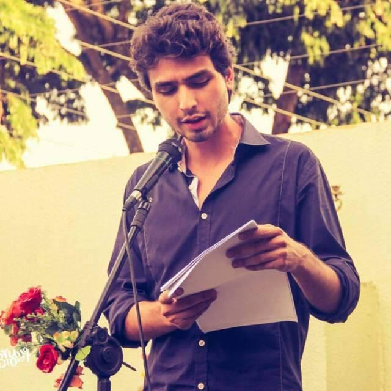
Ator, Escritor e Professor
Ator, escritor, dramaturgo e professor. Graduado em Letras/Libras pela UNIOESTE. Mestrando no Profletras. Professor da Rede Pública de Ensino. No teatro desde 2016, com atuação em produção cultural, dramaturgia autoral e trabalhos como ator em espetáculos de grupos como a Companhia Cênica de Cascavel, o Grupo Digressão Cênica (UNIOESTE) e os Arteístas. Transita entre o teatro, a literatura e a educação, sempre explorando os cruzamentos entre a palavra escrita e a cena.
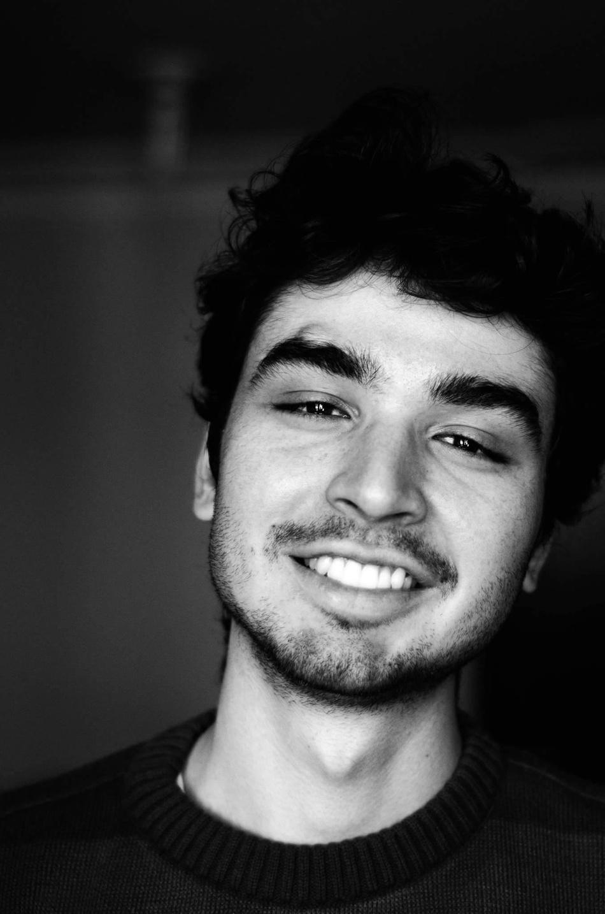
Graduação pela UNIOESTE — Cascavel.
Mestrado Profissional em Letras, em andamento — UNIOESTE.
Professor da Rede Pública de Ensino do Paraná.
Teatro, Cinema e Produção Cultural
Agente e Produtor Cultural
Durante os anos de 2016 e 2017 na Casa de Cultura Casanóz desenvolveu projetos culturais nas áreas de Teatro e Literatura. Dentre os principais trabalhos realizados no coletivo destaca-se o projeto 'Clube da Escrita', que tinha como proposta a troca de saberes e experiências com artistas e público geral, fomentando a produção de textos autorais divulgados nas redes sociais e eventos locais.
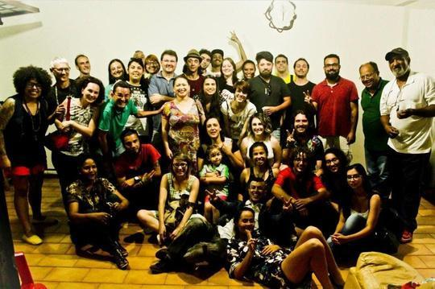
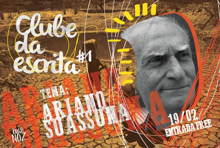
Ator
Espetáculo itinerante realizado nos dias 26 e 27 de agosto de 2018, nas cidades de Aracaju e Barra dos Coqueiros. A peça resgata memórias locais e folclóricas, levando o público por uma procissão sobre o Rio Sergipe, encontrando no caminho signos e simbolismos que refletem nosso processo histórico e cultural. Direção da Profa. Dra. Márcia Baltazar.
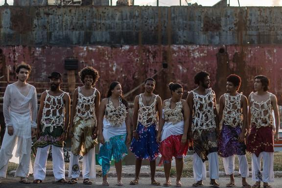
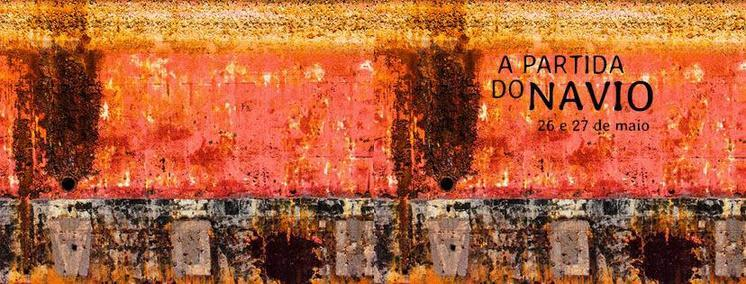
Ator
Apresentado na IV SEMAC/UFS e no FASC/UFS. Uma imersão na vida e obra do poeta cearense Antonio Carlos Belchior, a peça entrelaça elementos de História, MPB, Literatura e Teatro. Produção interdisciplinar sob a direção da Profa. Dra. Lourdisnete Benevides.
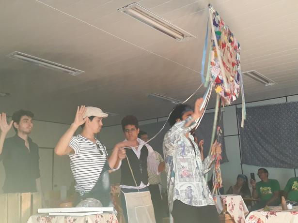
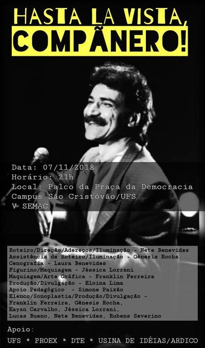
Ator e Dramaturgo
Em um cenário utópico, sete personagens arquetípicos são jogados ao mundo por um Demiurgo, que confronta seus sonhos com dilemas da vida humana. Dirigido por Aline Fernandes, o espetáculo desafia o público a refletir sobre sua própria natureza e destino. Apresentado no Festival de Teatro de Cascavel e Palotina.
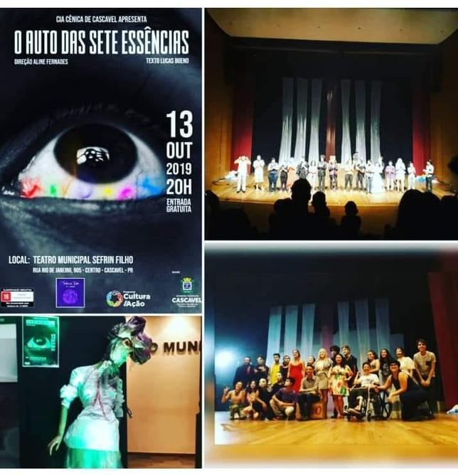
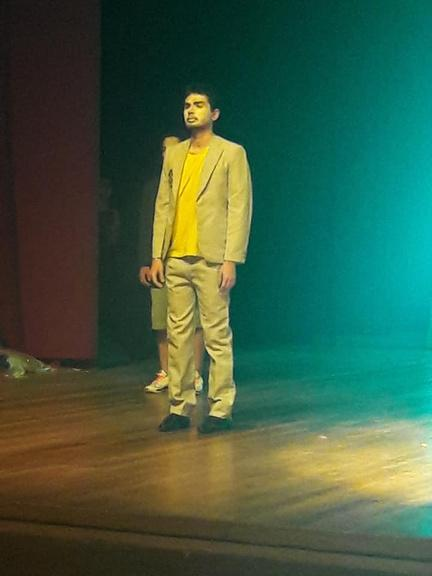
2019 - 2026
Ator
Grupo de Teatro Contemporâneo com atuação em Cascavel entre 2019 e 2023. Participou de processos criativos autorais e estudos práticos sobre a cena contemporânea.
Curta-metragem realizado com recursos da Lei Paulo Gustavo, marcando a incursão do grupo no audiovisual.
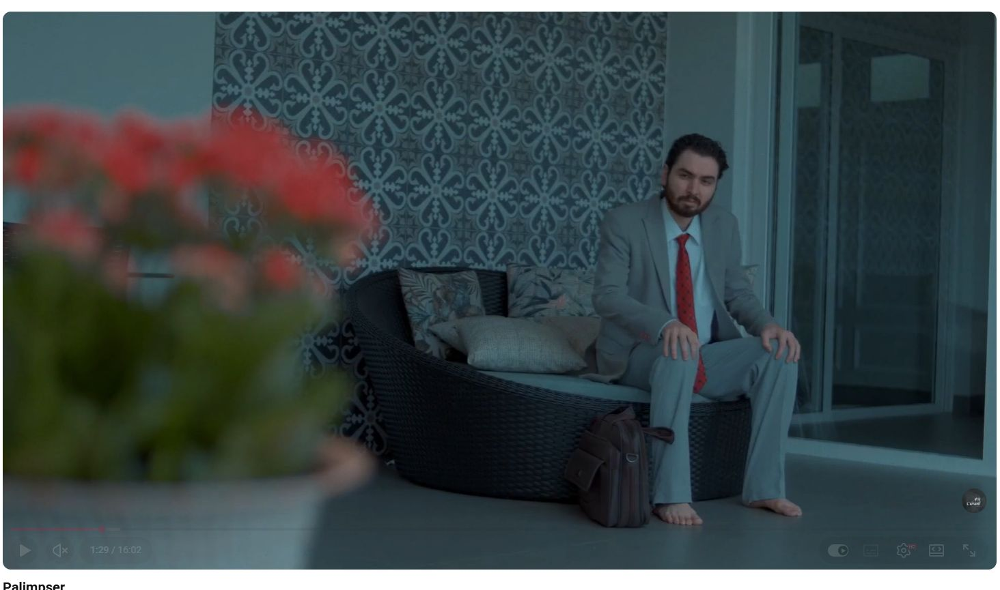
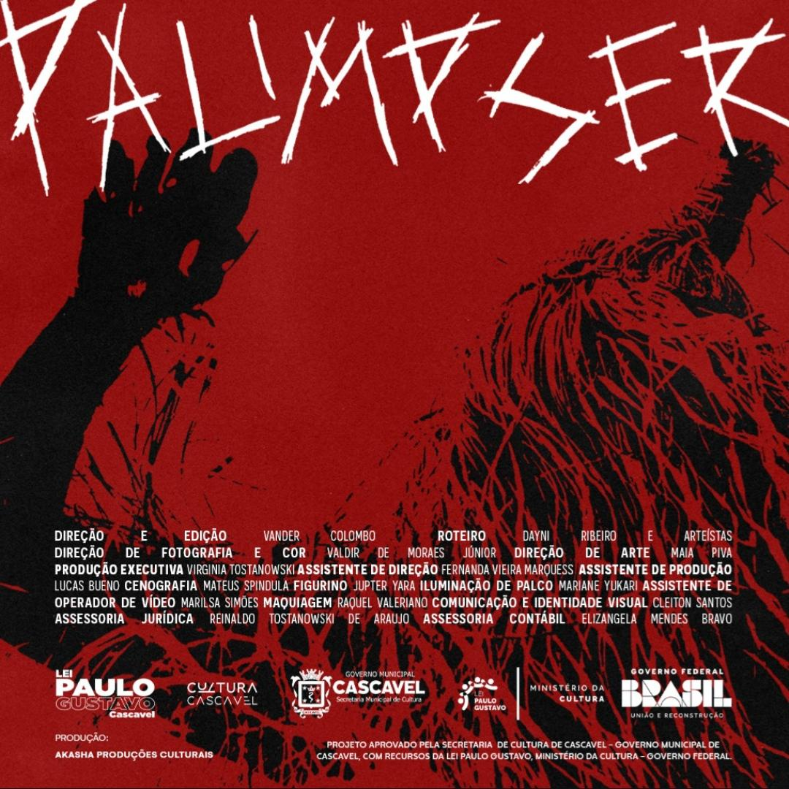
Ator - Mack Navalha
Montagem da clássica obra de Bertolt Brecht pelo Grupo Digressão Cênica, vinculado à UNIOESTE — Cascavel. Atuou no papel de Mack Navalha (Macheath), personagem central da trama que satiriza a sociedade burguesa através do submundo londrino.
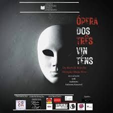
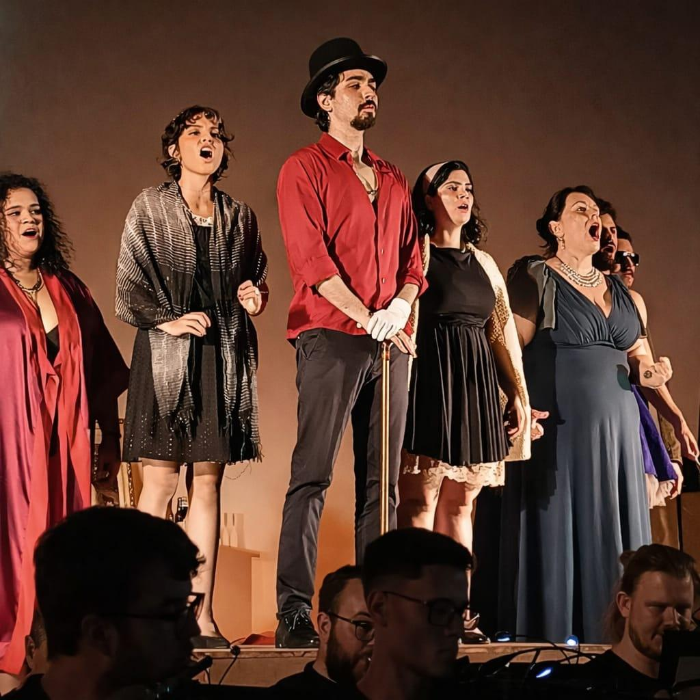
Ator - Pepe
Montagem da obra de Federico García Lorca pelo Grupo Digressão Cênica. A peça retrata a opressão e o autoritarismo dentro de uma casa dominada pela matriarca Bernarda Alba. Atuou como Pepe, o personagem masculino cuja presença, embora quase sempre fora de cena, desencadeia os conflitos centrais da trama.
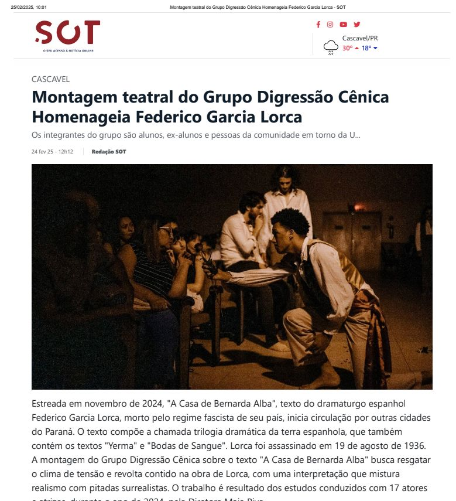
Ator e Assistente de Direção
Espetáculo de teatro contemporâneo do Grupo Digressão Cênica que mescla textos consagrados e dramaturgias autorais. Além da atuação, participou como assistente da direção, ampliando sua experiência nos processos criativos e de encenação.
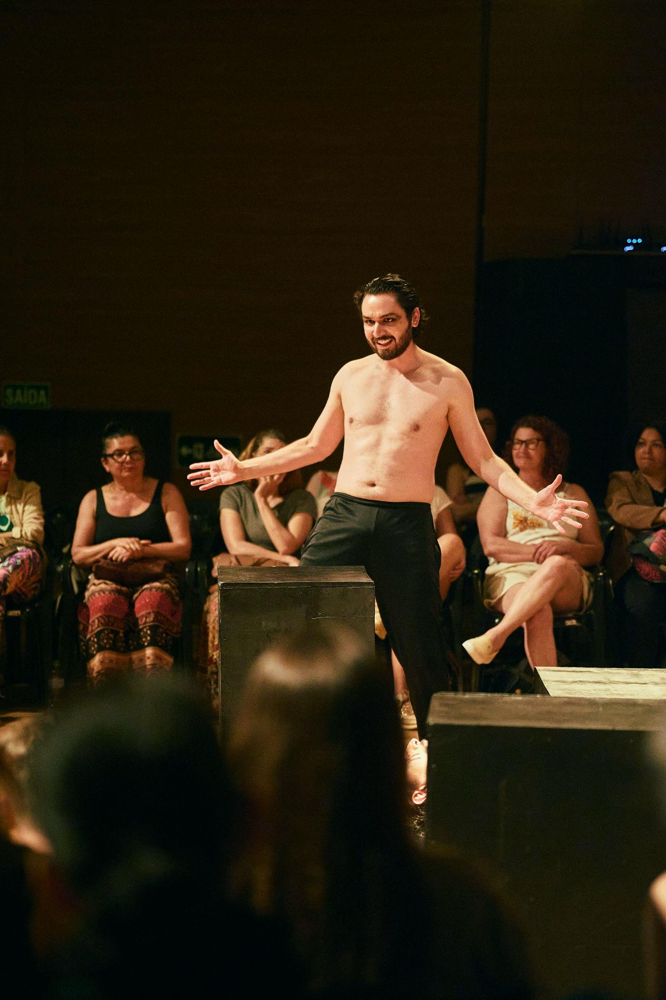
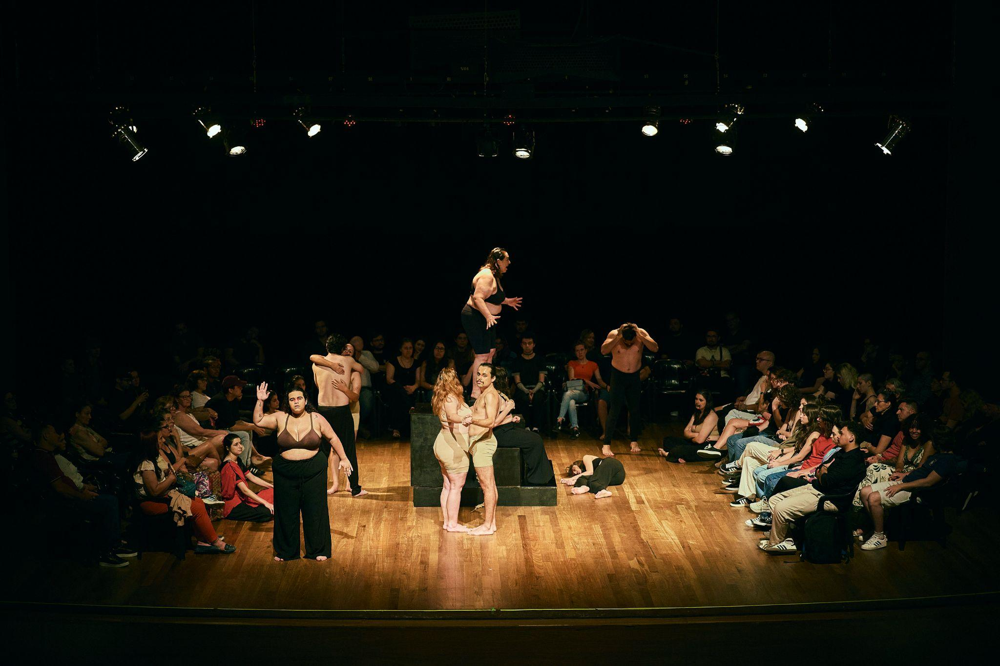